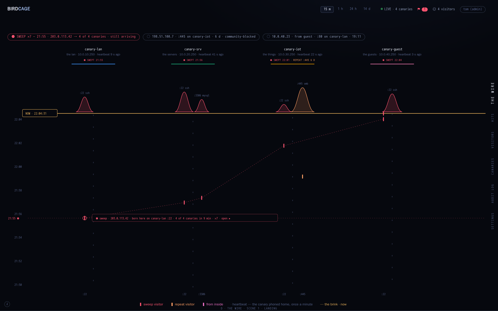
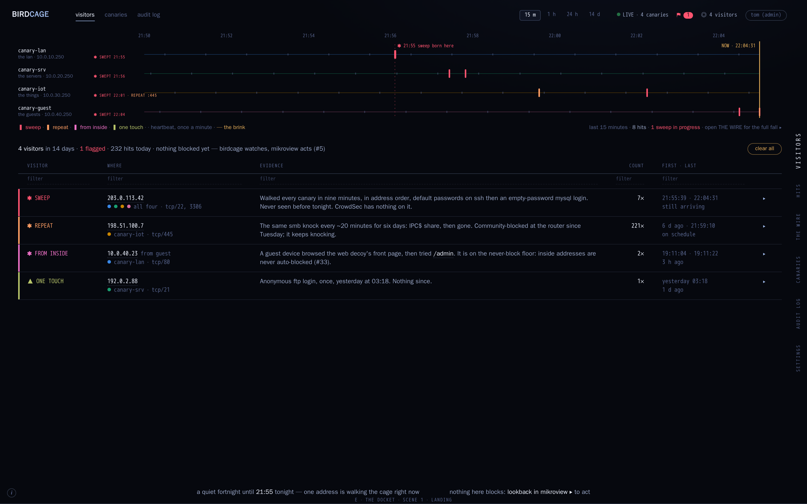

Verdict 2026-09-12: the docket is closer; the wire dropped. Two twists on the docket in round 3.
Round 1 was dropped for not carrying mikroview's identity. Round 2 is built from mikroview's ratified surfaces (concepts/round-30): free-floating chrome on the void, the deck as sideways names on the right edge, a time-falls-from-the-brink hero, flat hairline tables with inline filters, docket rows with a colour stripe and prose evidence. Same night as round 1: four canaries, one sweep across all of them 21:55–22:04 from 203.0.113.42, a six-day smb repeat visitor, a guest device poking from inside, one ftp touch yesterday.
Four canaries as columns; time falls from an amber brink. Every hit is a mark on its canary's wire, the sweep's route is a thread between them, the flag line marks where it was born. Hits and Visitors are the stream and the docket.

the wire (landing) ▸ hits, filtered to 203.0.113.42 ▸ visitors, the sweep opened ▸Who is at the canaries, one row each with a stripe and a sentence of evidence. The wire rides above as a slim ribbon, one line per canary, and folds away when a visitor is open. Opening a visitor gives the story, raw lines, the episode and its hits.

the docket (landing) ▸ hits, filtered to 203.0.113.42 ▸ the sweep opened ▸